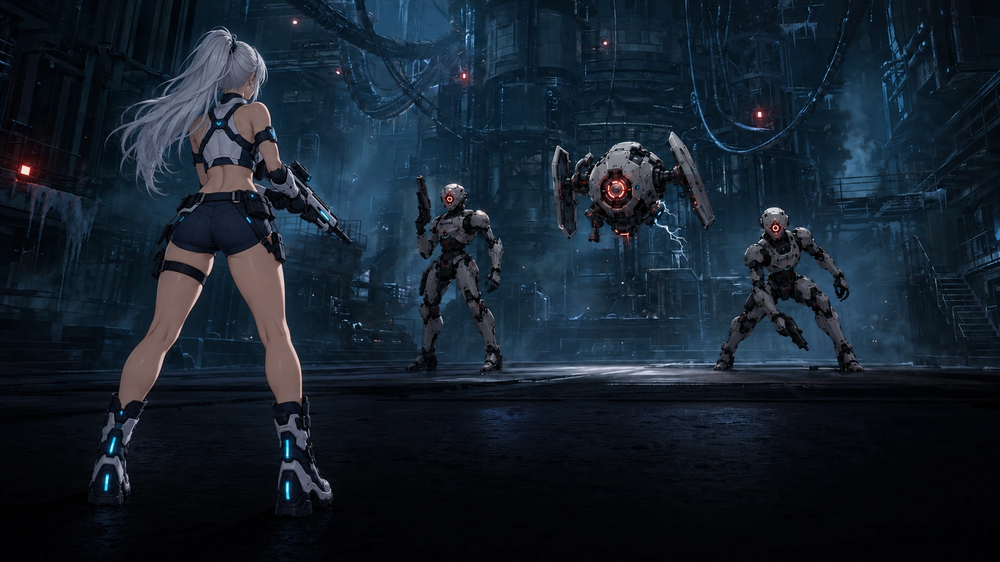

PROLOGUE // P-01 · R-0 LUMEN죽은 도시가 부르는 밤
기록
⌄
TAP / SPACE · 다음 대사
RELAY MEMORY // ENTRY 01
차가운 기동
폐쇄 릴레이 기지 R-0 「루멘」.
기억 없이 깨어난 사령관의 첫 기록을 재생합니다.
OPERATION LINK READY전투 준비 완료
비상 전원을 복구하고 제어실까지 이동하세요.